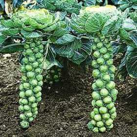

Low Calorie Baked Brussel Sprouts

Basic baked brussel sprouts
Ingredients
- Brussel sprouts
- Any seasonings
- Aluminum foil and tray
- Non-stick 0 calorie spray
Steps
- Wash brussels sprouts if not prewashed
- Cut stems off brussel sprouts, then slice in half vertically
- Place on tray lined with alumninum foil
- Spray with nonstick 0 calorie spray
- Season with anything you want
- Bake 300 degrees F for 10 minutes